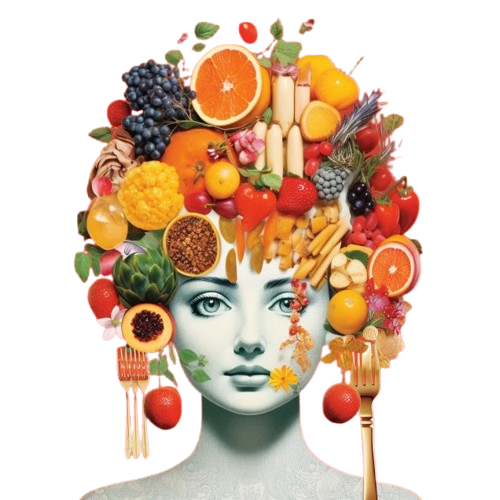

Alimente recomandate pentru susținerea hormonilor și dieta
ketobiotică
Descoperă o selecție de alimente esențiale pentru echilibrarea
hormonilor și susținerea unui stil de viață ketobiotic. Aceste
alimente nu doar că îți hrănesc corpul, dar te ajută să îți
îmbunătățești sănătatea hormonală și să te simți în formă. Fie că
vrei să optimizezi metabolismul printr-o dietă ketobiotică sau să
îți sprijini echilibrul hormonal, aici vei găsi cele mai bune
alegeri alimentare pentru fiecare necesitate.
